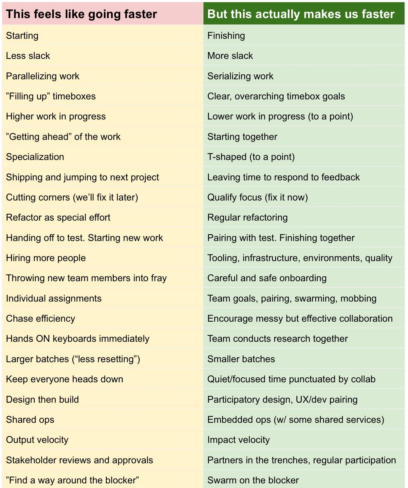

Feels Like Faster vs. Is Actually Faster
https://medium.com/hackernoon/feels-like-faster-vs-makes-us-faster-828686facc7e
I put together this comparison table a couple days ago and shared it on Twitter. Apparently it struck a chord.
To be clear, “fast” is not the end goal. The end goal is to sustainably generate beneficial outcomes. Crap shipped fast is still crap. That said, impact velocity matters — it buys you options, and lets you move later and pivot more quickly. Most companies (especially early on) are able to add complexity far faster than they are able to determine the value of that complexity. So, to be clear, I am talking about the rate of impact-generation, not raw output.
In my experience, there are many things we can do to appear busy, fast-moving, and efficient. But, counterintuitively, what seems like speed, is often just the opposite…especially in the mid to long term. I use the word “feels” below to acknowledge that the stuff on the left can feel more efficient, speedy, productive, and intuitive.
